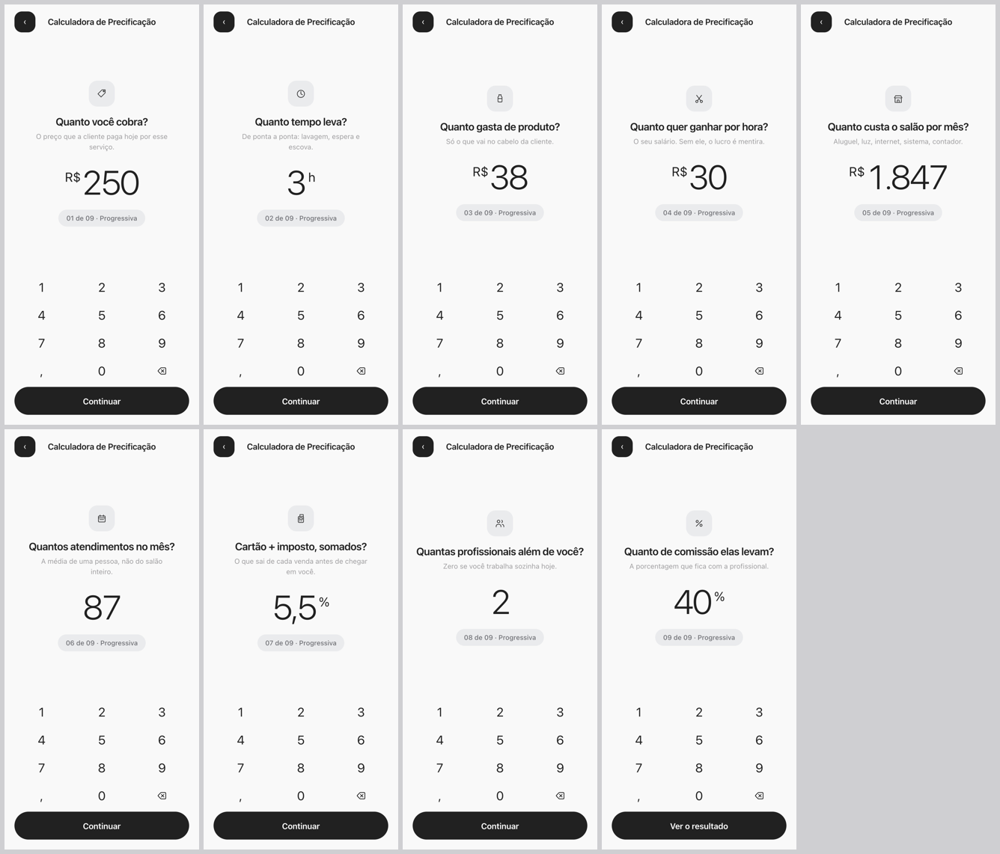
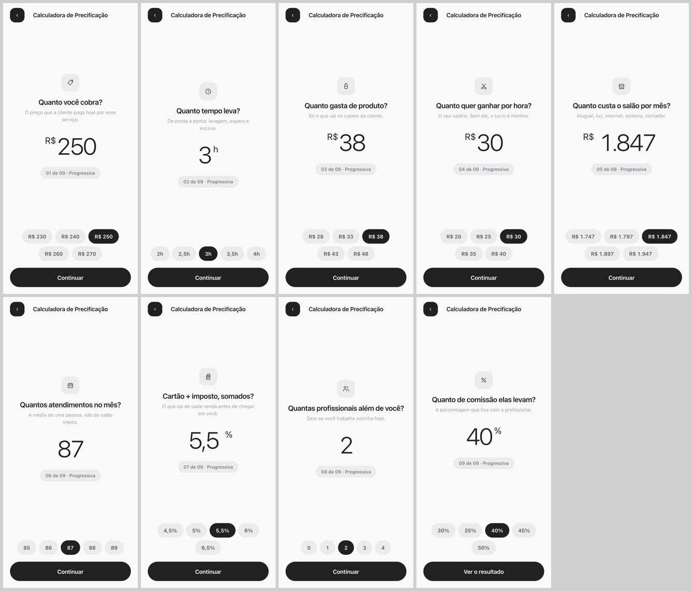

As 9 telas de pergunta em três jeitos de responder, e 3 resultados refeitos. O molde das perguntas é o que você aprovou. O resultado é o padrão do fechar caixa do interno, agora com o lucro líquido em ênfase — quatro jeitos de dizer «seu lucro líquido é de».
lailasalon-sistema/gestor/caixa.js + vp.css #cxPalco
— «FECHAR CAIXA DE HOJE: o comprovante saindo da impressora». Trouxe as regras medidas junto:
o par de scaleY(-1) (sem ele o papel desce como cortina, não sai da fenda), a máquina que
não anda (só a folha se mexe), a altura medida e nunca fixa, e o papel comprido que
demora mais a sair. Cores e medidas: tinta #1C1C1E, trilho #E4E4E6,
verde #12885C, lima #C8FF00, palco #F2F2F7.
mesma nota saindo da impressora; muda como o lucro líquido aparece
«Seu lucro líquido é de» em letra miúda e o valor ocupando a largura inteira do papel. O número manda sozinho.
Uma faixa preta sangrando de ponta a ponta do papel, com o valor em branco dentro. Contraste máximo no meio do cupom.
O valor vem carimbado torto sobre a nota, em moldura dupla verde — como «PAGO» num recibo de papel.
A frase inteira escrita: «Seu lucro líquido é de R$ 87,02 por progressiva». O número é parte da frase, não um dado solto.
mesmo molde aprovado; muda só como ela responde
O que você aprovou: teclado numérico próprio, nunca abre o do sistema. Digita o número exato.

Cinco valores prontos em volta do atual. Ela toca em vez de digitar — e ainda pode digitar no número.

Dois botões grandes e um trilho. O caminho mais rápido de todos, e o mais impreciso.